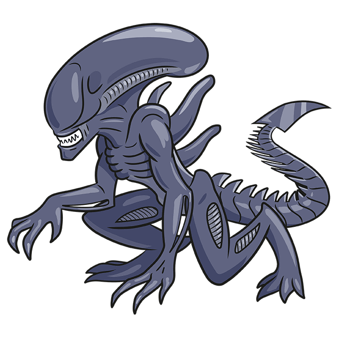

A história de "Alien Isolation" se passa quinze anos após os eventos do primeiro filme "Alien". A protagonista, Amanda Ripley, filha da famosa Ellen Ripley, embarca em uma missão para descobrir o que aconteceu com sua mãe, desaparecida há anos.
Amanda é informada de que a caixa preta da Nostromo, a nave onde sua mãe desapareceu, foi recuperada e está a bordo da estação espacial Sevastopol. Determinada a encontrar respostas, Amanda se junta a uma pequena equipe e viaja até Sevastopol.
A Sevastopol, outrora um próspero centro de comércio e vida, agora está em ruínas. A estação é um labirinto de corredores escuros e áreas abandonadas, proporcionando o cenário perfeito para o terror. Aqui, a verdadeira ameaça é o Xenomorfo, uma criatura mortal e praticamente indestrutível que caça qualquer ser vivo.
O Xenomorfo é a personificação do terror. Implacável, inteligente e letal, ele persegue Amanda e os outros sobreviventes incansavelmente. A criatura adapta suas estratégias, tornando cada encontro único e aterrorizante. A presença do Xenomorfo é uma constante lembrança da fragilidade humana diante de uma ameaça alienígena. O Xenomorfo, também conhecido como Alien, é uma criatura biológica altamente evoluída. Ele foi introduzido pela primeira vez no filme "Alien" de 1979, dirigido por Ridley Scott. Em "Alien: Isolation", o Xenomorfo mantém as características aterrorizantes que o tornaram famoso:
- Estrutura Corporal: O Xenomorfo possui uma exoesqueleto negro, uma cauda longa e pontiaguda, e uma cabeça alongada e lisa. Sua aparência é ao mesmo tempo fascinante e repulsiva.
- Mecanismo de Ataque: Equipado com uma boca interna retrátil que pode ser projetada rapidamente para atacar, o Xenomorfo é letal em combate corpo a corpo.
- Agilidade e Força: Ele é incrivelmente ágil e forte, capaz de se mover rapidamente e escalar paredes e tetos, o que aumenta sua imprevisibilidade.